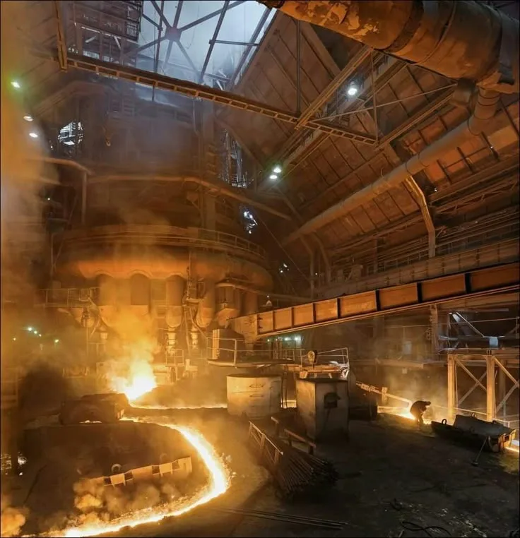
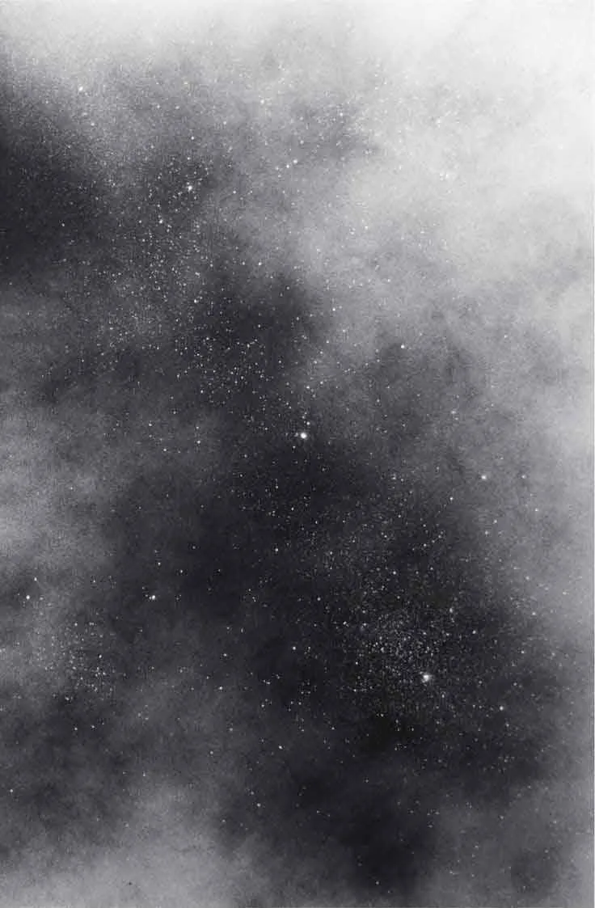

← 部落格 × Harbour
Bomin Kim（特效）


第 5 週
團隊成員
2 月 8 日
Bomin Kim（特效）
Caleb Stovall（3D／2D）
Mojie Tang（特效）
Sydney Relkin（合成）
Yiqi Zheng（特效）
SCAD × HARBOR － 第 5 週
大家好，這是我 SCAD × Harbor 部落格的第四週！
導師回饋：
Vi：
-
很高興看到你們有聽進建議
-
鏡頭 1：背景的環境太暗／構圖
-
鏡頭 2：需要加蒸氣嗎？
Hailey：
- 拿掉鏡頭 2，它和鏡頭 3 一樣
- 鏡頭 3：背景失焦，加入氛圍煙霧
- 鏡頭 6：標題要再拉出來一點
Kyle：
- 平移改成 3D／視差
- 不要太誇張，用緩慢細微的攝影機運動
- 把鏡頭 2 和 3 合併，從上往下很酷，讓攝影機繞著傾倒的部分旋轉
- 鏡頭 3：聚焦在重要的東西，把不重要的推到後面
- 鏡頭 5：景深／背景也許偏藍／深度合成泡泡
- 鏡頭 6：太緊了，把它做到完美
Billy：
- 背景失焦
- 不要直接算出景深
Joleen：
-
鏡頭 1 從上往下？把火焰和熔化連起來
討論後，我們決定把鏡頭 2 和 3 合併成一個有運動的鏡頭：攝影機往下移，並繞著傾倒中的熔融白金旋轉。鏡頭 2 我也在背景加了蒸氣和氛圍煙霧，加強工廠的環境感。這是最終的樣子，接下來一週我還需要調整環境煙霧。
算圖
我測試了好幾種不同黏度的熔融白金，想找出最合適的。這個鏡頭最新的測試中，我選擇了黏度 40。
黏度：20
黏度：30
黏度：20
黏度：40
黏度：100
分層：
Caleb 在 Karma 中分離了煙霧層和 beauty 層。我依照論壇文章的步驟做出了結果：使用 Render Geometry Settings 節點，在 Primitives 中選取不可見的物件，並選擇「Invisible to Primary Rays (Phantom)」來排除未選取的物件。
環境煙霧：
依照 Fowler 教授的建議，我在 Houdini 中測試了兩種煙霧解算器：Smoke Object Sparse 和 Smoke Object，比較它們的速度與煙霧效果。結果顯示 Smoke Object Sparse 比 Smoke Object 快很多。
Smoke Object
Smoke Object Sparse
我也測試了不同的環境煙霧效果，並加入灰塵，為傾倒的場景營造身歷其境的氛圍。
參考：


這是最終的 flipbook。
這是最終的算圖。